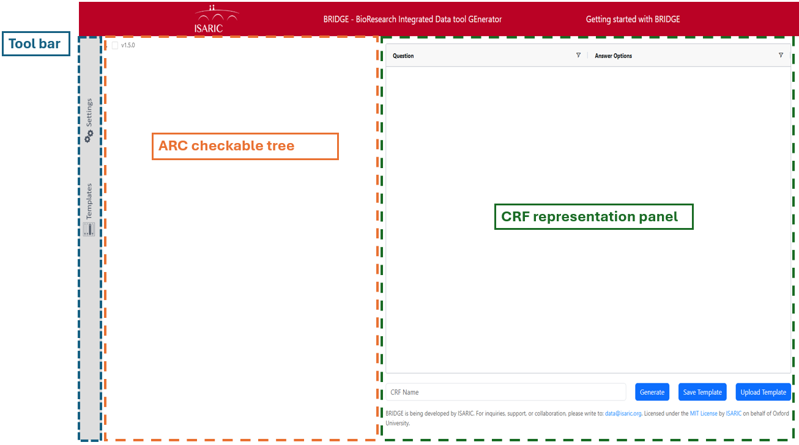
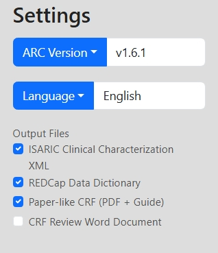
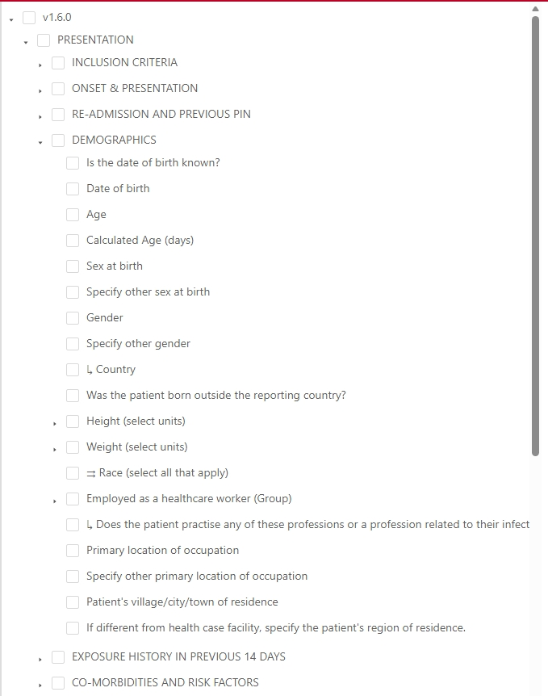
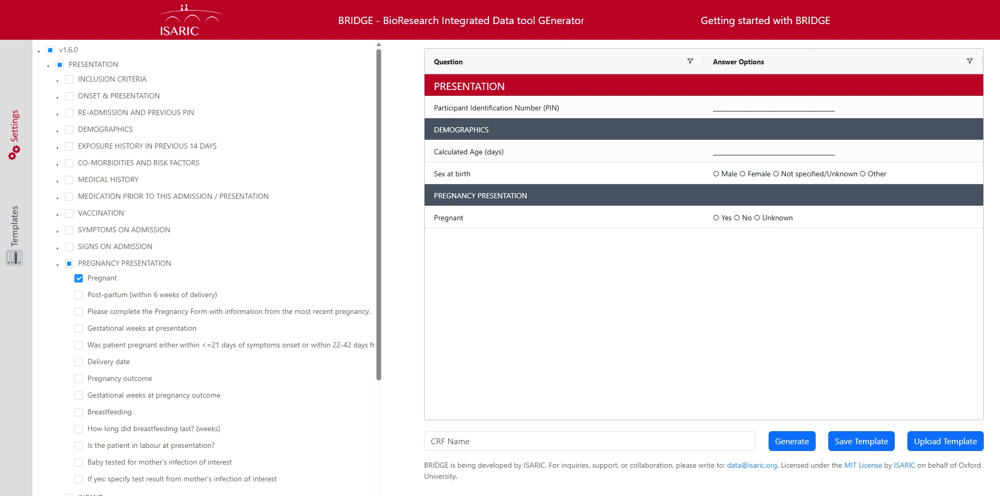
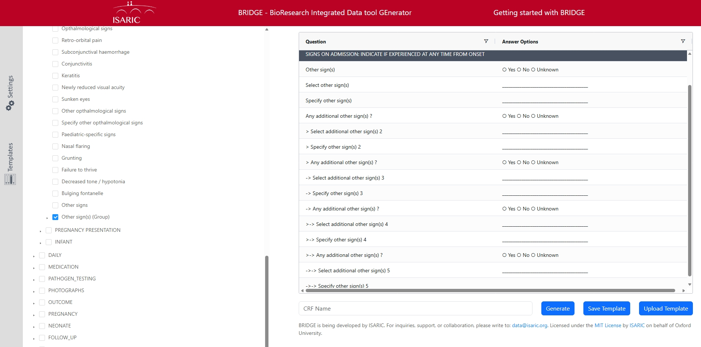
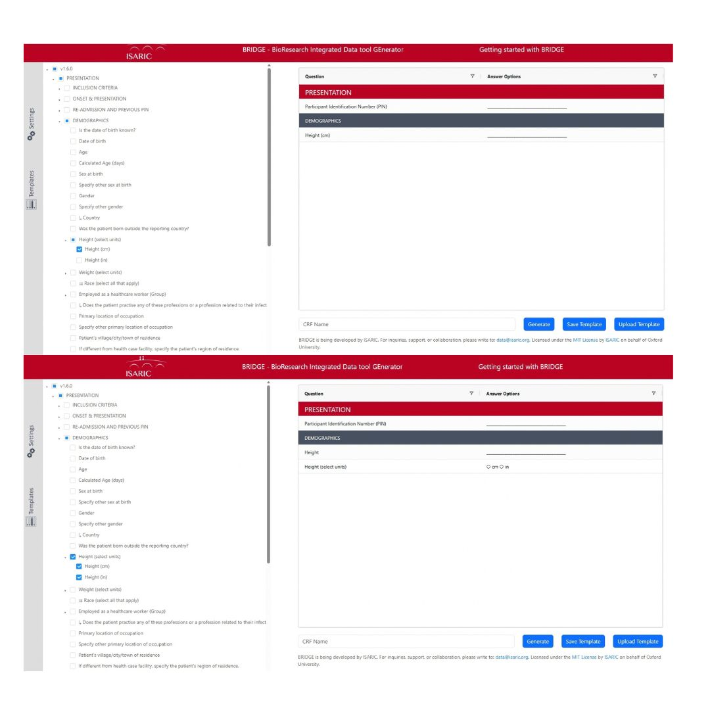
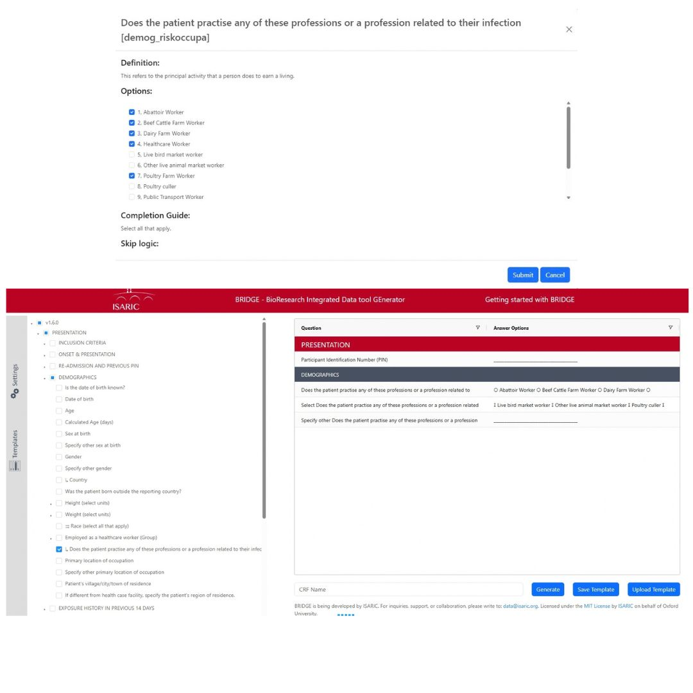
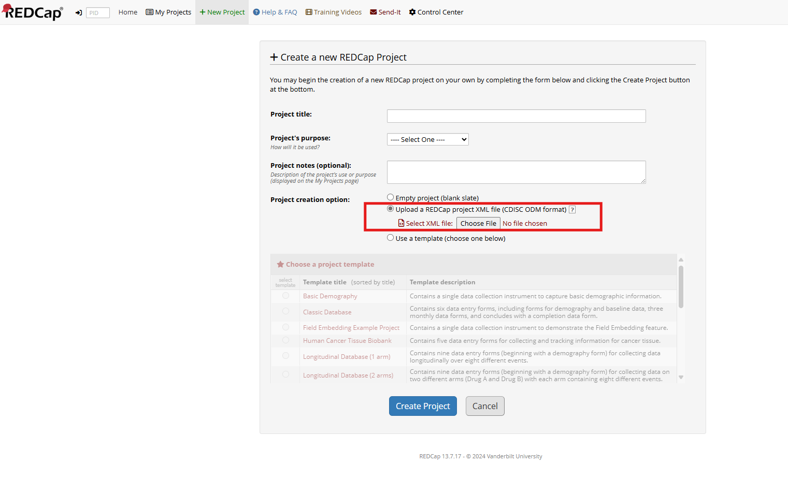
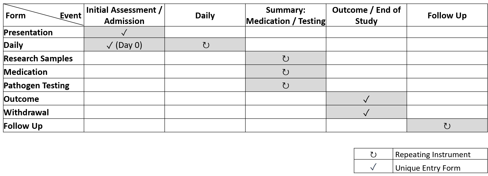
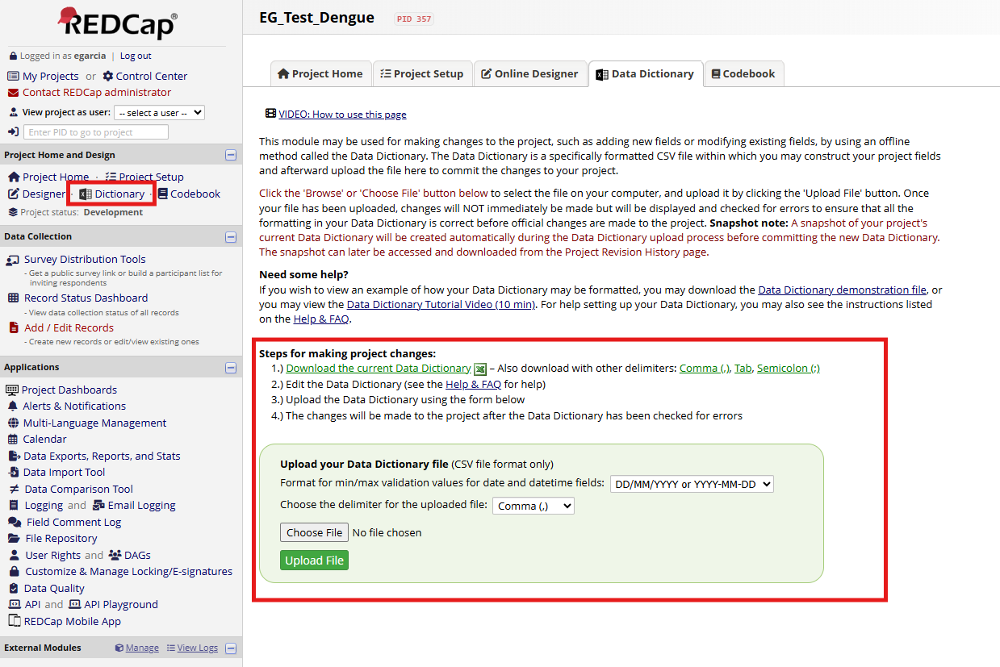

Getting started with BRIDGE
Access ISARIC BRIDGE web application here: BRIDGE
Introduction
BRIDGE is an application developed by ISARIC to help create case report forms (CRFs). It uses ARC, ISARIC's version-controlled library of standardized clinical questions.
ARC includes questions about demographics, comorbidities, symptoms, medications, and outcomes. Questions follow a standardized schema, use controlled terminology, and include quality checks.
BRIDGE lets users select and customize ARC questions for a particular disease or research context. It can generate files for setting up or updating a Research Electronic Data Capture (REDCap) project, as well as printable CRFs and completion guides.
There are two ways to start building a CRF with BRIDGE: choose one or more templates, or select forms, sections, and individual questions from the ARC tree. You can also adjust a template-based selection in the tree.
Quick Start
- In Settings, choose an ARC version, an available language, and the files you want to generate.
- Start from one or more templates, or choose forms, sections, and questions in the ARC tree.
- Review your selections in the CRF representation panel. Configure any question-specific options, such as units or list choices.
- Enter a CRF name and click Generate.
- Use the generated file that matches your task: XML for a new REDCap project, Data Dictionary CSV for adding selected questions to a project, or the PDF for paper collection.
Structure
BRIDGE is divided into three components:
- The toolbar on the left opens Settings and Templates. Select an icon to open a panel, then use Back to return to the main view.
- The checkable ARC tree is in the central panel. It organizes questions by ARC version, form (also called an instrument), section, and question.
- The CRF representation panel shows how the CRF is going to be when generating, including selected questions and support questions needed to be functional (that are automatically added by BRIDGE).

Settings
The Settings Panel allows users to customize their data collection environment by selecting their preferred ARC version, language, and BRIDGE output files. The selected language automatically applies to all field labels and any generated BRIDGE output files irrespective of the ARC version.
Users must choose language of choice before proceeding to template, as changing this setting later will completely erase any question selections already made in the template.
The specific BRIDGE output files generated are based on user's selection in the settings panel, and each output file serve a distinct purpose described below:
- ISARIC Clinical Characterization XML: This file can be used to generate a REDCap project. It contains the clinical characterization structure that can be uploaded to REDCap to generate a project that allows data capture in the ARC structure.
- REDCap Data Dictionary: This CSV contains the forms and questions selected for your CRF. Use it to add them to a REDCap project.
- Paper-like CRF (PDF + Guide): This option generates a printable PDF form for manual data collection and a completion guide.
- CRF Review Word Document: This optional file provides a Word version of the selected CRF for review.

Templates
To start from a template, open the Templates tab and select one or more pre-selected groups of questions. BRIDGE combines the questions from the selected templates, and you can then add or remove questions in the ARC tree.
ISARIC templates allow users to start the CRF creation process based on a set of pre-selected questions that ISARIC has curated for a particular disease or score.
Disease templates have been generated by the ISARIC network and have followed the CRF creation process that seeks to ensure that the questions included in such CRFs are adequate and sufficient to answer pertinent research questions. If you want to know more about the ISARIC creation process, please write to data@isaric.org.
Score templates are subsets of questions necessary to compute commonly used clinical scores, for example, the Charlson Comorbidity Index or SOFA.
For more about selecting and customizing questions in the ARC tree, see How to Create a CRF with BRIDGE.
How to Create a CRF with BRIDGE

To build or customize a CRF in the ARC tree, expand a form and select a whole form, a section, or individual questions. Your selections appear in the CRF representation panel. BRIDGE may also add supporting questions automatically. For example, selecting ‘Pregnant’ also adds ‘Sex at birth’.

Similarly, BRIDGE also generates and adds questions that improve electronic data collection. For example, when the user selects the question ‘Other sign(s) or abnormality,’ additional questions are added that promote the inclusion of up to five additional unlisted signs at presentation.

User Defined Questions
In addition to allowing the selection of questions for a particular CRF, BRIDGE allows further question customization in the following ways:
- ‘Select units’ question: For questions labelled ‘(select units),’ choose the units to include. If you choose one unit, BRIDGE adds a numeric question with that unit in its label (for example, ‘Height (cm)’). If you choose several units, BRIDGE adds a numeric question and a separate question for selecting the unit.

Example of choosing measurement units for a question. - ‘User list’ question (↳):
- In the ARC tree, click the question label marked with ↳ to open its options.
- Choose the options that are relevant to your study or site.
- BRIDGE creates a radio question with your choices and ‘Other’, a second-level dropdown with the remaining options, and a free-text field for an ‘Other’ response in that dropdown.

Choose the options for a user list question. - ‘Multi list’ question (⇉): Follow the same steps as for a User list question. The first-level options are checkboxes, so users can select more than one.
After choosing the variables, users can generate the pertinent files. They need to enter a CRF name in the textbox below the CRF representation panel and click on one of the buttons:
- Generate Downloads the data dictionary, XML file, paper like version of the CRFs and completion guide, and/ or CRF review word document, based on the output files selected in the settings panel.
- Save Template Saves your BRIDGE tree variable selection progress, allowing you to resume the variable selection process from where you left off without having to repeat the entire process.
- Upload Template Allows you to upload a previously saved template, and resume variable selection from where you left off.
How to Use BRIDGE Generated Files
BRIDGE generates the files you selected in Settings:
- ISARIC Clinical Characterization XML: Use this language-specific XML to set up the standard ISARIC clinical-characterization structure in REDCap. In REDCap, go to 'Project Setup' and, under 'Design your data collection instruments & enable your project,' choose 'Upload Instrument Zip file' and upload the file.

Upload the XML from the REDCap Project Setup page to create a new project. - This file creates a REDCap project with the following event structure:

Example event and instrument structure in the created project. - REDCap Data Dictionary CSV: This file contains the forms and questions selected for your CRF. To add them to an existing REDCap project, go to 'Data Dictionary', choose the CSV file, and click 'Upload File'.

Upload the Data Dictionary CSV from the REDCap Data Dictionary page. - Paper-like CRF and Completion Guide: The printable PDF can be used for manual data collection at sites that cannot capture data electronically. The completion guide supports consistent form completion, and collected data can later be entered into REDCap.
- CRF Review Word Document: This editable eCRF word document can be use to facilitate collaborative reviews and adjustments to study specific needs before finalizing the the CRFs.
- Some templates may include an additional template-specific PDF.